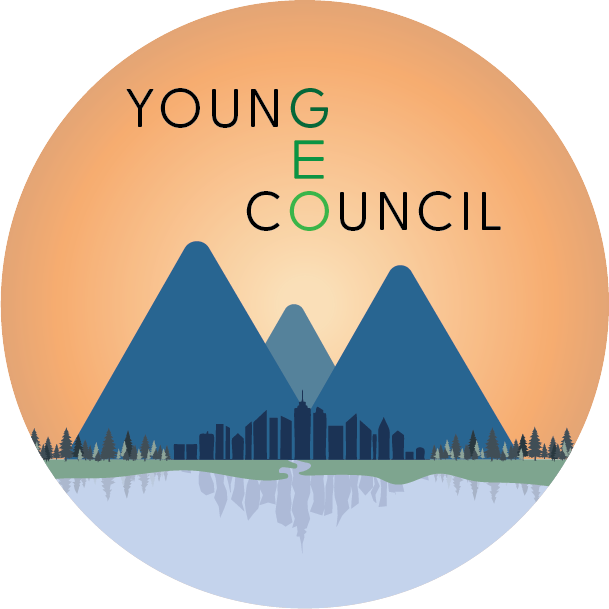

Geosciences PhD Day 2026Program details for the 2026 edition of the GEO PhD Day. This event is open to PhD students at the Faculty of Geosciences, Utrecht University.
Registration
GEO PhD Day 2026 takes place on 2nd April 2026 from 12:30-17:00 at the 📍 Parnassos Cultural Center in Utrecht (Kruisstraat 201). The event is organized by the Young Geo Council.
Registration for GEO PhD Day 2026 is now closed. Below you can find more information about the event, including the descriptions of the keynote and workshops.
Event Program
● Walk-in [12:30-13:00]
● Opening [13:00-13:15]
● Keynote: Free the Map. From Atlas to Hermes, towards a new cartography of borders and migration. [13:15-14:15]
Prof. Dr. Henk van Houtum (Nijmegen Centre for Border Research, Radboud University)
Click to see workshop description
A world map is a visual story that represents a particular perspective on reality. One might therefore expect multiple visual narratives reflecting the diverse actors, relations, and experiences that shape our world. Yet since the 16th century, the standard atlas—developed by Gerardus Mercator in a colonial context of discovery (read: conquest)—has largely told a single story: that of the nation-state. This state-centric cartography reduces the world’s complexity to bordered boxes, depicting people as homogeneous groups enclosed within thin, continuous lines. Migration, within this logic, appears as an anomaly, often visualized as hostile arrows invading these boxes.
This cartographic tradition has become so normalized that it is widely mistaken for objective and neutral, even though it represents only one perspective on the world. The consequences of this form of surreal, visual storytelling are vast. It feeds what geographers describe as the territorial trap and what social scientists call methodological nationalism: the tendency to treat the nation-state as the natural container of analysis. It masks historical and relational geographies, socio-economic interdependencies, demographic diversity, and legal entanglements, while reinforcing exclusionary, nationalistic “us versus them” imaginaries.
Based on my book Free the Map (2024), this lecture unpacks the effects of this hegemonic state-centric cartography and presents alternative approaches—counter-mapping, experience-mapping, and connectivity-mapping—that humanize the map and acknowledge how deeply interconnected and interdependent we are on the globe.
● Workshops [14:45-17:00]
◔ MapLab: Ceci n’est pas les Pays-Bas
Led by Prof. Dr. Henk van Houtum (Nijmegen Centre for Border Research, Radboud University)
Click to see workshop description
Join us for a hands-on MapLab that invites you to see the Netherlands—and the world—differently. Borders are not fixed lines. All places and states are part of dense networks of people, goods, data, finance, and ideas. Yet standard maps, in media, education and national spatial planning reports, often conceal these connections, reinforcing rigid, nativistic territorial thinking that does not correspond to the world we live in. Moreover, these representations—with their exclusive emphasis on territory— overlook how people actually experience space. The standard map of the Netherlands thus does not reflect reality; it produces a surreality. This is not the Netherlands.
Together, we will question the default map of the Netherlands and experiment with alternatives— collaborative, imaginative, and grounded in lived geographies. Participants will create their own subjective maps of the Netherlands, rethinking, drawing, and engaging in speculative cartography that reflects how we actually live, move, and connect across space. This is not just a lecture; it is a space to reflect, imagine, and design more inclusive ways of seeing the world—and a call to redraw the nationalistic frame. Let’s free the map.
◔ Non‑Academic Publishing
Led by Kars Oosterhuis - Hora Est
Click to see workshop description
Do you want to reach a bigger audience with your research, but do you have no idea where to start? The workshop ‘How to reach out as a scientist’ provides you with hands-on tools. You will learn how to look at your own research with a distance, and interest a broader audience for your findings and how to trigger journalists. As a scientist you are often involved in specific niche research. That allows you to come up with valuable insights. At the same time people lacking background knowledge might not always follow you. The workshop will allow you to look at your own research with a distance. The following topics are addressed:
- How to recognize storylines in your own research that a relevant for outsiders (journalists, policymakers, opinionators).
- How media think and work. What makes research ‘newsworthy’ and how can you link your finding to current (news)events?
- How to reach out with your research. How to connect to journalist and how to get your opinion article published in a newspaper.
During the workshop you get to see examples of media-exposure and what the impact can be. Also, you’ll learn do’s and don’ts when reaching out to media and interacting with journalists. This is also very useful at birthday parties as you can now keep your listeners entertained when telling about your research.
◔ Collaborative Zine‑Making Workshop: Building Resilience
Led by Elfi Scheefhals (mixed media artist) and Sophia Pekowsky (PhD candidate at Leiden University)
Click to see workshop description
In this workshop, targeted towards early stage PhDs, we will explore our worries and insecurities about the PhD trajectory using creative methods. Zines have been used by feminist and queer organizations as activist tools to circulate information not endorsed by mainstream media and bring together marginalized communities. Using collage, we will create our own collaborative zines, sharing our own worries and offering advice. The final zines can be kept, distributed, and returned to when PhD related insecurities return.
🍽️ Dinner [17:30-21:00]
After the workshops, we will gather for dinner at 📍 Spaghetteria - Wittevrouwensingel. The dinner will be covered by the Young Geo-Council. Please note that spots are limited and will be allocated on a first-come, first-served basis.